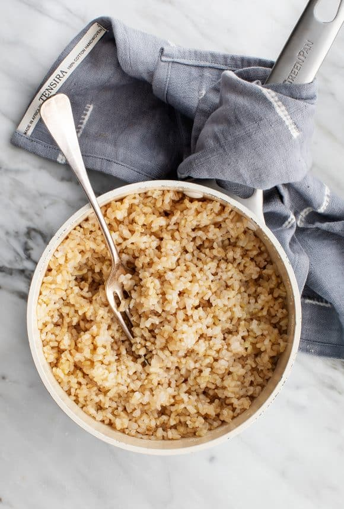

Brown Rice

Description
Ingredients:
- 1 cup uncooked brown rice, well rinsed
- 2 cups water
- 1 teaspoon extra-virgin olive oil
Steps
- Combine the rinsed rice, water, and olive oil in a pot and bring to a boil. Cover, reduce the heat to low, and simmer for 45 minutes.
- Remove from the heat and let it sit, covered for 10 more minutes. Fluff with a fork.